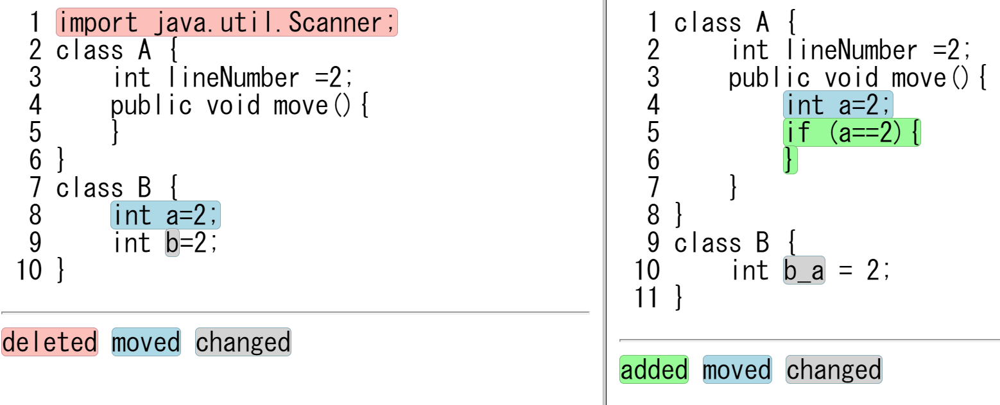
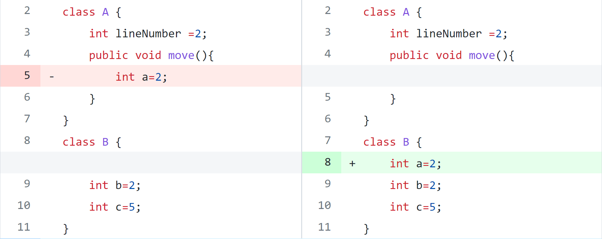
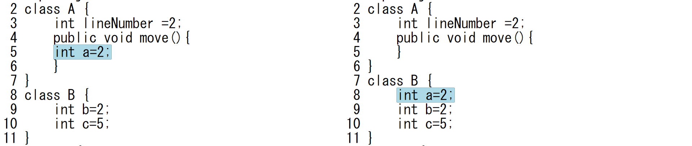
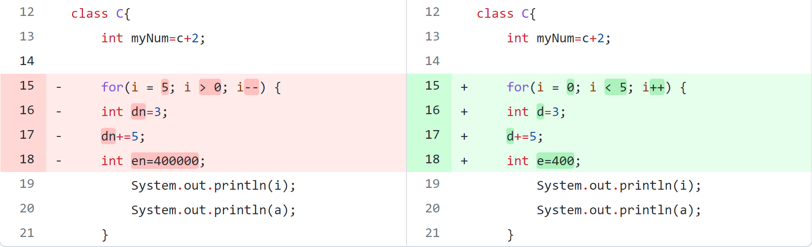
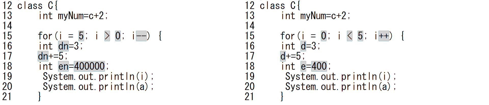
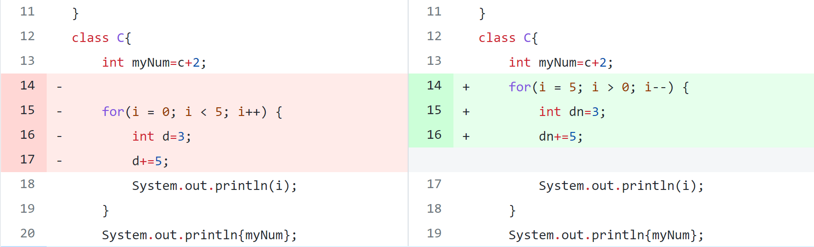
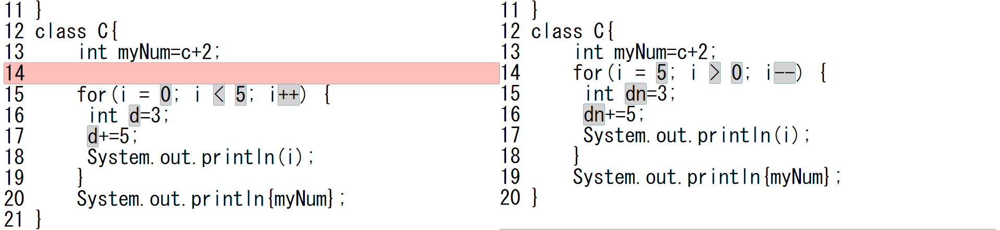

A Visual Tool for Change-Based Code Review
このページでは、2022年3月 電子情報通信学会総合大会の論文
「A Visual Tool for Change-Based Code Review」
で提示した方式を実装したプログラムのソースコード(version 0.1.1)を公開しています。
使い方
vcr_0.1.1.zip
"をダウンロードして展開し、Readme.txtファイルに従ってインストール、実行してください。"
スクリーンショット

github差分表示機能と比較
コードの移動
Fig.1 2 はgithub差分表示機能と提案手法でコードの移動を含むソースコードを比較する時です。
github差分表示機能はコードの移動を検出することができない。
提案ツールはコードの移動を色付けで表示している。

Fig.1 github差分表示機能コードの移動スクリーンショット

Fig.2 提案ツールコードの移動スクリーンショット
コードの変更
コード変更の部分(左右揃う)場合
Fig.3 4 はgithub差分表示機能と提案手法でコードの変更(左右揃う場合)を含むソースコードを比較する時です。
github差分表示機能と提案ツールはコード変更部分(左右揃う場合)、コードの変更を検出することができる。

Fig.3 github差分表示機能コードの変更(左右揃う場合)スクリーンショット

Fig.4 提案ツールコードの変更(左右揃う場合)スクリーンショット
コード変更の部分(左右揃わない)場合
Fig.5 6 はgithub差分表示機能と提案手法でコードの変更(左右揃わない場合)を含むソースコードを比較する時です。
github差分表示機能はコードの変更を検出できない。
提案ツールはコード変更部分左右揃わなくでも表示している。

Fig.5 github差分表示機能コードの変更(左右揃わない場合)スクリーンショット

Fig.6 提案ツールコードの変更(左右揃わない場合)スクリーンショット
更新履歴
-
2022年2月22日 version 0.1.1を公開
バッグの修正
-
2021年12月18日 version 0.1.0を公開